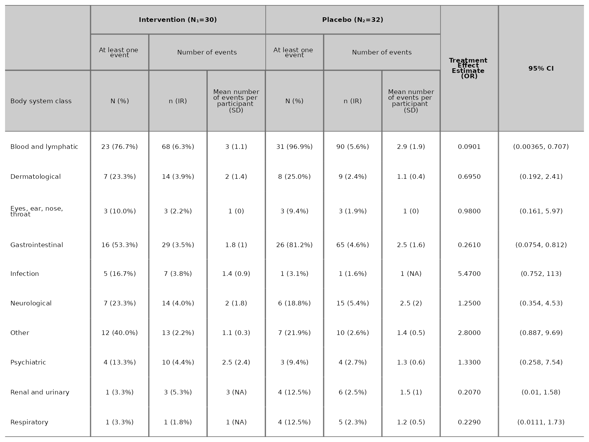
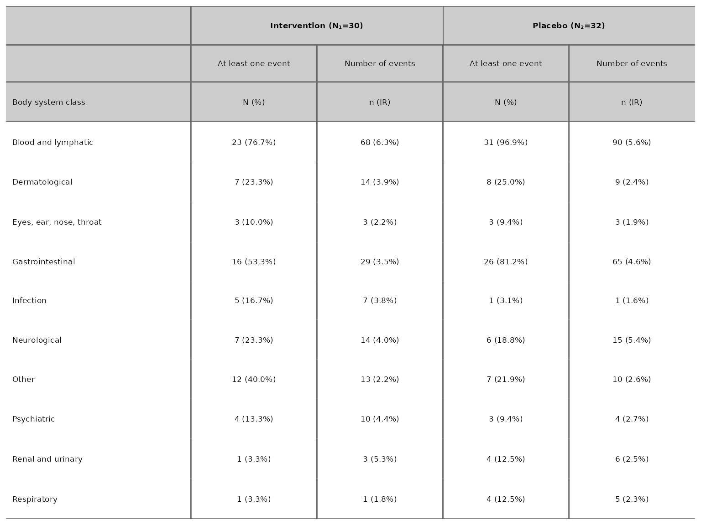
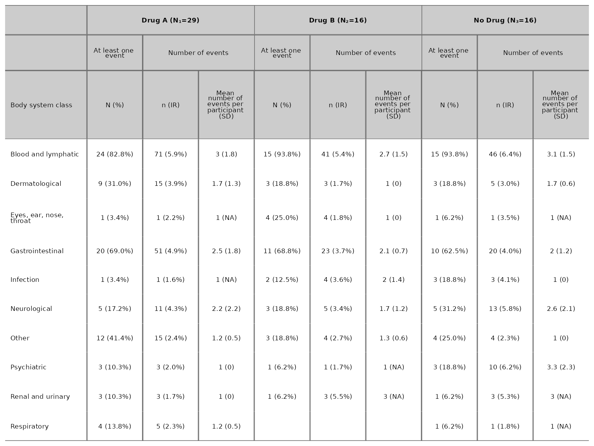
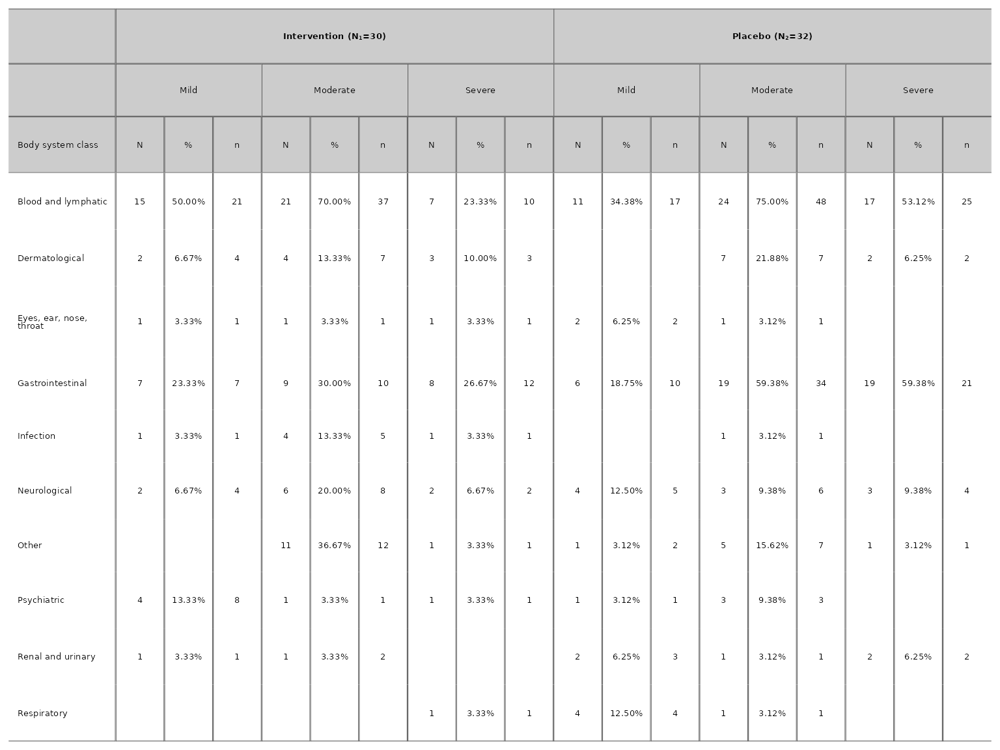
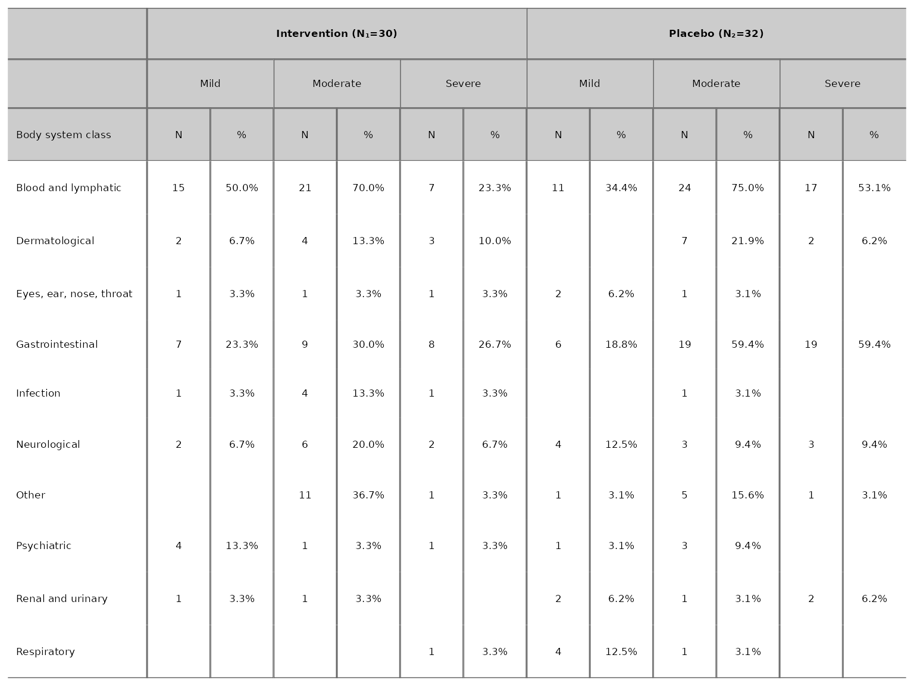
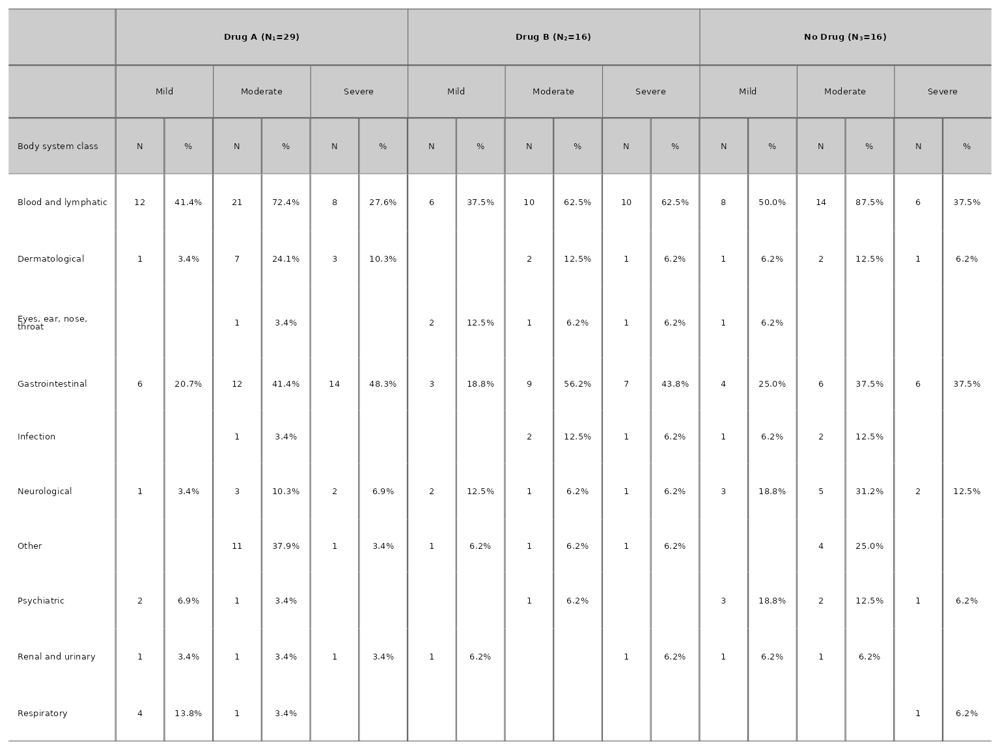
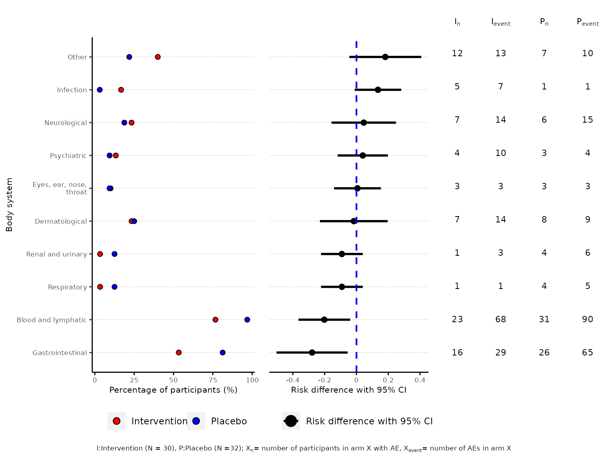
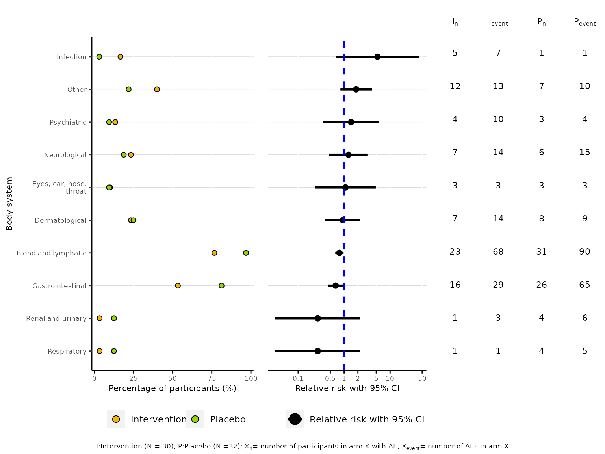
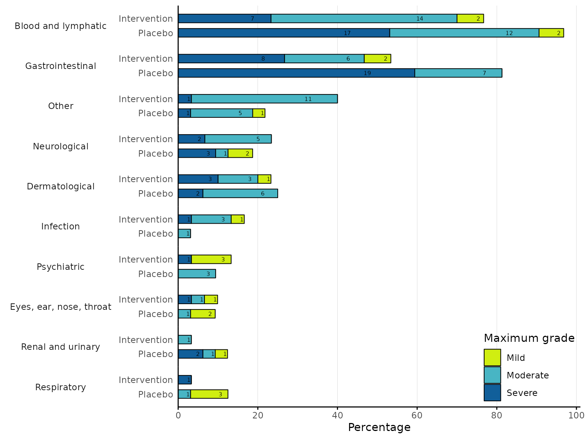
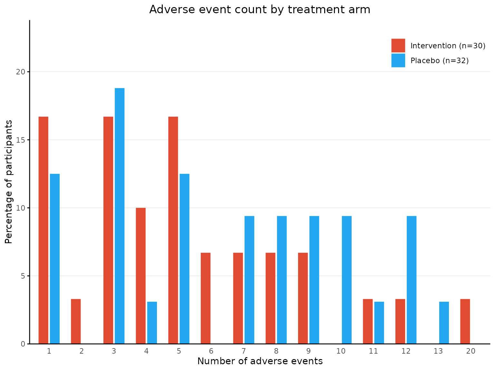

aeplots
aeplots.RmdIntroduction
The vignette documents how to use the functions in
aeplots to create tables and plots for analysing adverse
event data in clinical trials.
Input data
2 treatment arms
To generate tables and plots to summarise adverse events in clinical trials, the R package requires the input dataset in data frame format. A sample dataset with two treatment arms is shown below:
| id | arm | ae_pt | aebodsys | severity | date_rand | last_visit | variable1 | variable2 |
|---|---|---|---|---|---|---|---|---|
| 2001 | Placebo | Cold | Respiratory | Moderate | 2015-10-28 | 2016-08-31 | 2 | 910.7851 |
| 2001 | Placebo | Anemia | Blood and lymphatic | Severe | 2015-10-28 | 2016-08-31 | 2 | 910.7851 |
| 2001 | Placebo | Anemia | Blood and lymphatic | Moderate | 2015-10-28 | 2016-08-31 | 2 | 910.7851 |
| 2001 | Placebo | Leukocytosis | Blood and lymphatic | Severe | 2015-10-28 | 2016-08-31 | 2 | 910.7851 |
| 2001 | Placebo | Nausea | Gastrointestinal | Severe | 2015-10-28 | 2016-08-31 | 2 | 910.7851 |
| 2001 | Placebo | Cold | Respiratory | Mild | 2015-10-28 | 2016-08-31 | 2 | 910.7851 |
| 2001 | Placebo | Nausea | Gastrointestinal | Moderate | 2015-10-28 | 2016-08-31 | 2 | 910.7851 |
| 2001 | Placebo | Proteinuria | Renal and urinary | Severe | 2015-10-28 | 2016-08-31 | 2 | 910.7851 |
| 2001 | Placebo | Anxiety | Psychiatric | Moderate | 2015-10-28 | 2016-08-31 | 2 | 910.7851 |
| 2001 | Placebo | Vomiting | Gastrointestinal | Moderate | 2015-10-28 | 2016-08-31 | 2 | 910.7851 |
We would need to convert the body_system_class and severity columns to factors.
df2$aebodsys <- as.factor(df2$aebodsys)
# for severity to be presented in ascending order, we order the levels
df2$severity <- ordered(df2$severity, c("Mild", "Moderate", "Severe"))Note that for all the functions below, you would need to specify the column names corresponding to each variable needed unless you rename the column names of your dataset to the default column names as specified in the sample dataset of the documentation. Do refer to the detailed documentation of each function by typing:
help(aetable)More than 2 treatment arms
The functions aetable, aeseverity,
aestacked and aebar can take up to 4 treatment
arms. A sample dataset with 3 treatment arms:
| id | arm | ae_pt | aebodsys | severity | date_rand | last_visit |
|---|---|---|---|---|---|---|
| 2001 | Intervention 1 | Cold | Respiratory | Moderate | 2015-10-28 | 2016-08-31 |
| 2001 | Intervention 1 | Anemia | Blood and lymphatic | Severe | 2015-10-28 | 2016-08-31 |
| 2001 | Intervention 1 | Anemia | Blood and lymphatic | Moderate | 2015-10-28 | 2016-08-31 |
| 2001 | Intervention 1 | Leukocytosis | Blood and lymphatic | Severe | 2015-10-28 | 2016-08-31 |
| 2001 | Intervention 1 | Nausea | Gastrointestinal | Severe | 2015-10-28 | 2016-08-31 |
| 2001 | Intervention 1 | Cold | Respiratory | Mild | 2015-10-28 | 2016-08-31 |
| 2001 | Intervention 1 | Nausea | Gastrointestinal | Moderate | 2015-10-28 | 2016-08-31 |
| 2001 | Intervention 1 | Proteinuria | Renal and urinary | Severe | 2015-10-28 | 2016-08-31 |
| 2001 | Intervention 1 | Anxiety | Psychiatric | Moderate | 2015-10-28 | 2016-08-31 |
| 2001 | Intervention 1 | Vomiting | Gastrointestinal | Moderate | 2015-10-28 | 2016-08-31 |
aetable function
2 treatment arms
aetable plots a table of AE summary by body system class
and arm. It contains the total number of participants at risk per arm
(\(N_{1}\), \(N_{2}\)), frequency (N), proportion (%),
total number of events (n), incidence rate (IR), number of adverse
events per participant (mean & SD) and treatment effect estimate
with its 95% confidence interval (CI). To include additional covariates
besides arm in the model, specify a vector of variable names in the
variables argument.
aetable(df2, body_system_class="aebodsys", control="Placebo", intervention_levels=c("Intervention"),
treatment_effect_estimate=TRUE, variables = c("variable1", "variable2"))
We can specify the model used to estimate the treatment effect and
95% CI via the model argument. The available model options
are Poisson (rate), Poisson (count),
Negative Binomial (rate),
Negative Binomial (count), Binomial (logit),
Binomial (log) and Binomial (identity).
aetable(df2, body_system_class="aebodsys", control="Placebo", intervention_levels=c("Intervention"),
treatment_effect_estimate=TRUE, model="Binomial (logit)", variables = c("variable1", "variable2"))
We can specify the number of decimal places for the proportions, IR, mean and SD columns as well as the number of significant figures for the treatment effect estimate and 95% CI.
aetable(df2, body_system_class="aebodsys", control="Placebo", intervention_levels=c("Intervention"),
treatment_effect_estimate=TRUE, variables = c("variable1", "variable2"), proportions_dp=2, IR_dp=2,
mean_dp=2, SD_dp=2, estimate_sf=4, CI_sf=4)We can choose to drop the treatment effect estimate and 95% CI by
specifying treatment_effect_estimate=FALSE.
aetable(df2, body_system_class="aebodsys", control="Placebo", intervention_levels=c("Intervention"),
treatment_effect_estimate=FALSE)We can also choose to drop the mean column by specifying
mean=FALSE.
aetable(df2, body_system_class="aebodsys", control="Placebo", intervention_levels=c("Intervention"),
treatment_effect_estimate=FALSE, mean=FALSE)
More than 2 treatment arms
aetable does not include the treatment effect estimates
and their 95% CIs for datasets with more than 2 treatment arms. To
change the labels of control and interventions in the table, specify the
label for control in the argument control_name and specify
the intervention labels in the argument intervention_names.
Note that intervention_names should be specified using the same order as
the interventions specified in intervention_levels.
aetable(df3, body_system_class="aebodsys", control="Placebo", control_name="No Drug",
intervention_levels=c("Intervention 1", "Intervention 2"), intervention_names=c("Drug A", "Drug B"))
aeseverity function
2 treatment arms
aeseverity plots a table of frequencies and proportions
of events by severity categories. We specify the number of decimal
places for proportions via the argument proportions_dp.
aeseverity(df2, arm_levels=c("Intervention", "Placebo"), body_system_class="aebodsys", proportions_dp=2)
We can choose to drop the number of events column by specifying
n_events=FALSE.
aeseverity(df2, arm_levels=c("Intervention", "Placebo"), body_system_class="aebodsys", n_events=FALSE)
More than 2 treatment arms
aeseverity(df3, arm_levels=c("Intervention 1", "Intervention 2", "Placebo"),
arm_names=c("Drug A", "Drug B", "No Drug"), body_system_class="aebodsys", n_events=FALSE)
aedot function
aedot plots a dot plot proportions alongside treatment
effect estimates with accompanying 95% confidence interval to visualise
AE and harm profiles in two-arm randomised controlled trials.
aedot(df2, body_system_class="aebodsys", control="Placebo", intervention="Intervention")Similar to aetable, we can specify the model used to
estimate the treatment effect and 95% CI via the model
argument. The available model options are unadjusted (RR),
unadjusted (RD), Poisson (rate),
Poisson (count), Negative Binomial (rate),
Negative Binomial (count), Binomial (logit),
Binomial (log) and Binomial (identity).
aedot(df2, body_system_class="aebodsys", control="Placebo", intervention="Intervention", model="unadjusted (RD)")
We can change the colours of the dots on the percentage of
participants plot through the dot_colours argument.
aedot(df2, body_system_class="aebodsys", control="Placebo", intervention="Intervention",
dot_colours=c("#F4B800", "#97D800"))
aestacked function
2 treatment arms
aestacked plots a stacked bar chart of proportions for
each body system class by arm and maximum severity. If severity is not
ordered, it is required to specify the levels of severity in ascending
order in the argument severity_levels.
aestacked(df2, body_system_class="aebodsys", arm_levels=c("Intervention","Placebo"),
severity_levels=c("Mild", "Moderate", "Severe"))
We can change the colour for each severity by specifying a vector of
colour codes corresponding to each severity level in the
severity_colours argument.
aestacked(df2, body_system_class="aebodsys", arm_levels=c("Intervention","Placebo"),
severity_levels=c("Mild", "Moderate", "Severe"), severity_colours=c("#D0EE11", "#48B5C4", "#115F9A"))
aebar function
2 treatment arms
aebar plots a bar chart for number of events reported
per participant.

We can change the colour representing each treatment arm by
specifying a vector of colour codes in the arm_colours
argument according to the order of arm levels specified in the
arm_levels argument.
More than 2 treatment arms
aebar(df3, arm_levels=c("Intervention 1","Intervention 2", "Placebo"), arm_names=c("Drug A","Drug B", "No Drug"),
facets=FALSE)We can plot a bar chart for each treatment arm in separate facets by
specifying facets=TRUE.
aebar(df3, arm_levels=c("Intervention 1","Intervention 2", "Placebo"), arm_names=c("Drug A","Drug B", "No Drug"),
facets=TRUE)